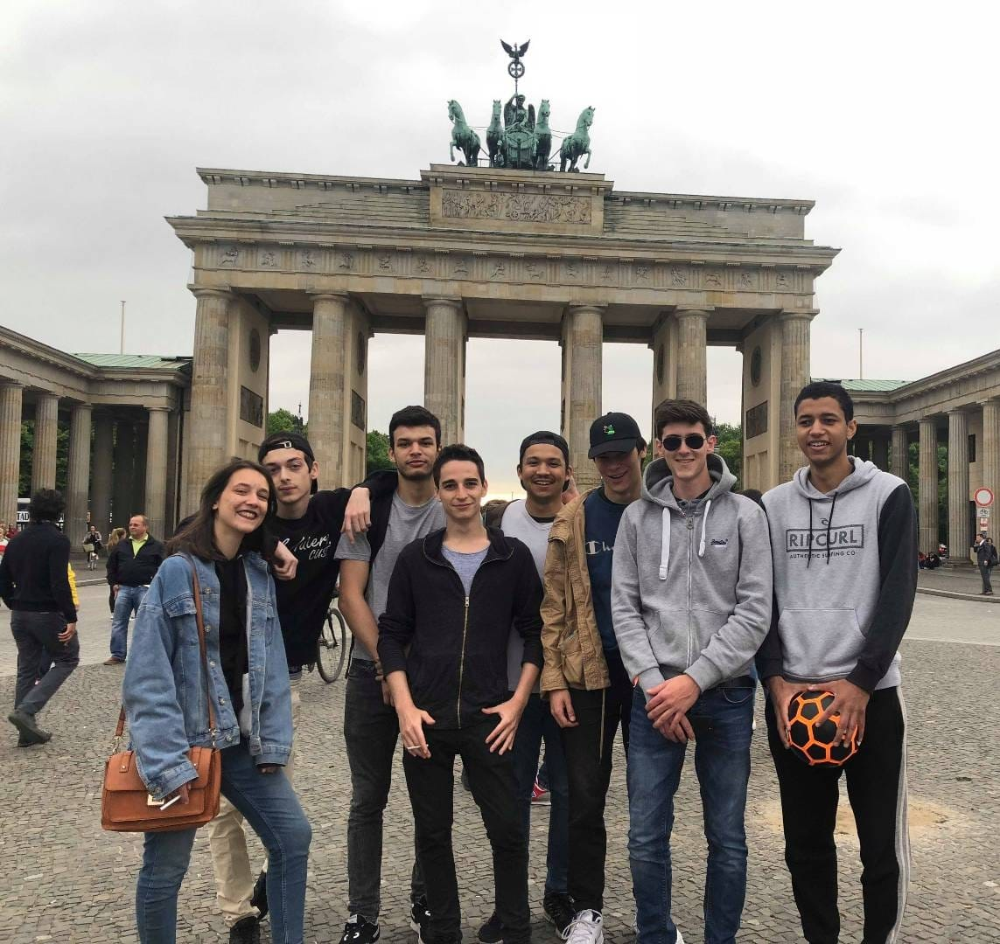

Mes projets
Semestre 5
Protocole F01Informatique
Semestre 5
Protocole F01Informatique
Semestre 4
V-GAIAInformatique
Semestre 3
The DoorPFH
Semestre 4
JFHInformatique
Eté 2018
GRProjet Perso
Semestre 4
Spring TechPFH
Semestre 4
Spring TechPFH
PROTOCOLE F01
Protocole F01 a été l'un des projets que j'ai préféré: Une très bonne entente d'équipe, un projet intéressant techniquement, mais également de par son contexte et le fait que cela aurait pu être un réel projet tout en ayant une histoire de film d'espionnage.
Description
Protocole F01 est lié à une histoire:
2021, une troisième guerre mondiale risque d’éclater, les Etats-Unis cherchent à empêcher cette nouvelle guerre en dérobant les plans d'attaques de la Corée du Nord. Le Protocole F-01 réunit les meilleurs espions missionnés pour récupérer ces informations.
Un espion doit alors se rendre sur place afin de récuperer une clé USB dissimulée quelque part par un agent infiltré. La problématique est que si l'espion se fait controler avec la clé USB ou un ordinateur ayant envoyé ces données il sera repéré. C'est là que Protocole-F01 intervient: un envoi automatisé, chiffré, et par un réseau sécurisé de tout le contenu d'une clé USB, grâce à... une deuxième clé USB !
Avec l'utilisation d'un système Tails sur clé USB, mais également de plusieurs scripts bash et python, l'utilisation était la plus simple possible. L'espion n'avait qu'a branché la première clé, démarrer l'ordinateur, puis brancher la deuxième clé afin de chiffrer les données de celle-ci et de les envoyer de façon sécurisée.
Objectifs
Le produit final allait principalement tourner autour de 2 éléments : Le système qui envoie les données, et celui qui les réceptionne. Le système envoyant les données se trouvait alors sur Tails, une distribution Linux basée sur Debian, qui avait pour particularité de préserver l’anonymat et la confidentialité.
En effet, ce système était installé sur clé USB, et était totalement vierge à chaque redémarrage ! Il avait aussi déjà Tor d’installé, ce qui nous permettrait d’envoyer nos données chiffrées et de manière totalement anonyme.
Nous avions alors plusieurs objectifs sur Tails:
Tout d’abord, il fallait pouvoir activer une petite partition du système qui serait persistante et chiffrée, afin de conserver les services nécessaires, et nos scripts d’automatisation.
Il fallait ensuite pouvoir chiffrer les données demandées, grâce à l’outil Veracrypt.
Effectivement, même si le réseau Tor chiffre déjà les données, la connexion entre le premier nœud de ce réseau, et notre système n’est pas chiffré ! Il fallait alors trouver un moyen que les données soient chiffrées de bout en bout.
Tor était donc la prochaine étape : pouvoir se connecter à ce réseau et envoyer les données à la machine réceptrice.
Après avoir réussi toutes ces étapes à la main, il fallait tout automatiser ! Pour le serveur récepteur des données chiffrées, il fallait tout simplement qu’il soit connecté sur le réseau Tor.
La dernière étape était bien évidemment de posséder une deuxième clé USB, avec des données dites « sensibles » afin de pouvoir envoyer celles-ci de manière sécurisée et anonyme.
Résultats
Le résultat a tout simplement été… un succès ! L’automatisation fonctionnait parfaitement, et il suffisait de brancher la clé USB contenant Tails, attendre que le script demande d’insérer la 2ème clé USB contenant les données, et le tour était joué ! Un envoi parfaitement sécurisé, qui ne laisse aucune trace sur l’ordinateur hôte, ou sur le système Tails.
Ma contribution
J'ai beaucoup participé sur ce projet, car j'étais très intéréssé par la partie technique, et que mes coéquipiers ont pu travailler sur d'autres tâches. Ainsi, j'ai pu me concentrer sur les objectifs suivants:
- Scripts d'automatisation ( bash et python )
- Paramétrage de Tails et de Tor
- Chiffrement du contenu de la clé usb (Veracrypt)
Compétences acquises
VGAIA
Le projet VGAIA a été un gros bond vers l’avant qui nécessitait de nombreuses capacités, cela m’a permis de voir une net amélioration depuis mon arrivée à INTECH.
Il aura surtout été une grosse introduction à une technologie que j’utilise quotidiennement en entreprise, et dans mes projets personnels: la virtualisation.
Description
VGAIA est un outil permettant de fournir et d’automatiser la création d’une infrastructure et l'installation de services sur celles-ci.
Mais concrètement, ça veut dire quoi ?
Cet outil se présentait sous forme d’une plateforme web, avec plusieurs champs à remplir : système d’exploitation, mémoire vive, nombre de CPU, capacité de stockage, services a installer ( MySQL, Apache, Postfix, Bind9…).
Ces champs remplis selon les besoins des utilisateurs, étaient ensuite récupérés et utilisés par l'outil de provisionning Ansible. Ce logiciel de provisionning, comme son nom l’indique, allait créer la machine demandée, et la provisionner, c’est-à-dire, lui apporter les paquets et les configurations nécessaires afin d’avoir une machine prête à l’emploi en seulement quelques minutes.
Cette utilisation qui peut paraitre très simple du point de vue de l’utilisateur, incluait tout de même de nombreux services.
Objectifs
Il fallait tout d’abord créer une interface WEB, et l’exposer sur un DNS local (Bind9) à l’aide d’un serveur LAMP (Linux Apache MySQL PHP).
Nous devions aussi installer Ansible et le configurer afin qu’il récupère tous les champs nécessaires à la création de la machine.
Afin de pouvoir héberger nos machines virtuelles, nous avions besoin d’une autre équipe dont le projet était la création d’un VCenter, un serveur de gestion centralisée de machines virtuelles.
Nous devions alors configurer un client VSphere, qui se connecterait à ce VCenter afin d’y installer les machines sur un ESXI dédié.
Un ESXI est tout simplement un hyperviseur, donc un service permettant au serveur hôte de prendre en charge plusieurs machines virtuelles.
Il fallait ensuite pouvoir envoyer les informations de connexion à l’utilisateur, par mail, qu’il devra changer dès sa première connexion.
Résultats
Je ne vais pas vous cacher que ce projet a présenté une difficulté qui a altéré grandement l’avancée du projet : L’esprit d’équipe.
En effet, il y a eu un gros manque de communication dans cette équipe, ce qui a valu de n’avoir aucun suivi sur nos tâches.
Je vous invite à lire l’article esprit d’équipe pour en savoir plus!
Malgré cela, quand nous nous sommes rendu compte de la charge de travail qu’il restait à effectuer afin de rendre le produit dans les temps, nous avons d’autant plus travaillé afin qu'il soit fonctionnel à la date prévue.
Lors de la date de fin du projet, nous étions capable de fournir une machine virtuelle à notre utilisateur selon ses besoins, excepté quelques services qui n’étaient pas disponibles.
Par exemple, l’utilisateur pouvait avoir une machine virtuelle avec le système d’exploitation qu’il souhaitait, mais ne pouvait pas décider d’installer Postfix sur celle-ci.
Le projet n’a alors pas été une entière réussite, mais aura tout de même rempli les objectifs principaux. Pour ma part, ce projet m’a beaucoup apporté techniquement, mais aussi humainement car il m’a fait comprendre l’importance d’avoir une équipe soudée et bien organisée.
Ma contribution
J’ai principalement travaillé sur 2 tâches:
La première, était la création de la plateforme WEB, afin de fournir une interface utilisateur pour paramétrer sa machine virtuelle.
Deuxièmement, j’ai également contribué à la configuration d’Ansible, afin qu’il récupère les options entrées par l’utilisateur, et qu’il s’en serve ensuite pour créer la machine virtuelle.
Compétences acquises
THE DOOR
The Door a été un projet dont je me rappellerai toute ma vie. Je me souviens encore arriver à IN’TECH, sans une once de confiance en moi, très timide et ayant peur du jugement. J’ai alors été mis dans un projet par défaut, sans savoir qu’il allait changer ma vie.
Description
Le projet The Door était extrêmement ambitieux, et tournait principalement autour d’un seul objectif : Animer une conférence sur la confiance en soi.
A la manière de David Laroche, nous devions alors réussir à redonner à un public, si possible externe à l’école, confiance en eux. Autant vous dire que je n’aurais jamais choisi ce projet de moi-même, car comment peut-on animer une conférence parlant de confiance quand je n’ai moi-même pas confiance en moi ? Vous l’aurez deviné, ce projet qui paraissait pourtant si simple, a été un véritable challenge pour moi, et présentait beaucoup plus qu’un seul objectif
Objectifs
Ceux-ci étaient très nombreux. Je pense que c’est le projet le plus ambitieux sur lequel j’ai travaillé, et j’aimerai vous décrire l’avancée de chacun d’entre eux, mais écrire un roman serait plus facile.
Les voici :
- S’auto former sur la confiance en soi
- Se former ensemble sur la prise de parole
- Créer une page Facebook et la promouvoir
- Créer une vidéo de promotion ( Facebook et youtube )
- Créer des flyers, et les distribuer dans la rue
- Publier un évènement sur le Facebook de l’école, passer dans les classes
- Récupérer le plus de mails possible, puis créer une campagne de mail grâce à Mailchimp
- Créer une billetterie pour la conférence
- Trouver un endroit pour animer la conférence
- Préparer les textes, les slides, et les présentations
- Préparer des activités pour animer la conférence ( méditation, exercices, participation du public… )
Je ne vais pas le cacher, certains de ces objectifs n’ont pas été une réussite totale. Je pense principalement à la communication qui visait à attirer des personnes externes à l’école pour qu’elles puissent participer à notre conférence. Il est difficile d’avoir de la visibilité en seulement quelques mois et sans avoir de contacts, mais nous avons tout de même eu quelques personnes externes, qui nous ont toutes donné un retour positif !
Le projet dans sa généralité était une grande réussite, et chaque membre du groupe en est sorti avec une énorme confiance en soi, et une capacité à transmettre ses connaissances aisément.
Présentations
La conférence se tenait en 4 parties, aussi nombreuses que les membres de l’équipe :
- – La peur - Kevin
- – Mindset et pensée positive - Quentin
- – La visualisation - François
- – Les éléments déclencheurs – Rafael (moi)
Ma contribution
Parmi tous ces objectifs, j’ai pu participer à certains d’entre eux.
Bien évidemment mon auto-formation sur le développemnt personnel, mais j’ai aussi créé la page Facebook, et j’avais pour charge de la promouvoir, en utilisant la publicité sur ce réseau. J’ai ensuite fait des statistiques afin de savoir quelles techniques étaient les plus efficaces.
J’ai également participé à la création de la vidéo, en cherchant les musiques, les vidéos à monter, et en écrivant les sous-titres.
J’ai été présent à toutes les distributions de flyers, et pour la communication interne à l’école.
Pour finir, j’ai bien évidemment préparé mon texte et ma présentation, et j’ai aidé mes collègues pour les leurs.
Vidéo promotionnelle
Vous pouvez retrouver cette même vidéo sur notre ancienne page Facebook >ici< (Sortez les mouchoirs !) :
Flyers
Voici les flyers que nous avons distribué:


Compétences acquises
À venir !
GoodRentree
GoodRentree est né suite à une discussion avec un ami du lycée qui était passionné par l’auto-entrepreneuriat. Celui-ci avait déjà fait plusieurs plateformes d’e-commerce, et avait réussi à grandement m’intéresser sur le sujet.
Il m’a alors proposé de créer notre propre plateforme de dropshipping, et m’a laissé trouver quels produits nous allions vendre sur celle-ci.
Description
Comme nous étions au début des vacances, j’ai pensé qu’il serait intéressant de vendre des fournitures scolaires dans les thèmes à la mode de 2018: Fortnite et les mangas!
Le dropshipping consiste à vendre un produit que l’on n’entrepose pas nous même. On ne fait que la passerelle entre le client et le fournisseur. Le client se rend alors sur notre plateforme, choisit les produits qu’il souhaite, et une fois ces produits achetés, nous nous occupons de transmettre ses informations au fournisseur afin que le client soit directement livré chez lui.
Le bénéfice se fait alors en vendant le produit légèrement plus cher que si on achète celui-ci directement chez le fournisseur.
Objectifs
Pour présenter un produit fonctionnel, et attirer de potentiels clients, il y avait 3 objectifs principaux à accomplir :
- Créer une plateforme d’e-commerce, l’exposer sur internet, et y ajouter les produits.
- Mettre en place de l’automatisation, qui commandera les produits demandés par le client chez le fournisseur, avec les informations de celui-ci.
- Faire de la communication, grâce aux publicités sur les réseaux sociaux.
Accomplissement des objectifs
Comme mon ami était sur plusieurs projets en même temps, j’ai décidé de prendre les choses en main, sur toutes les parties que représentaient ce projet. Il était évidemment là pour m’épauler et me guider sur le sujet de la communication principalement, car il avait plus de connaissances dans ce domaine.
J’ai alors créé la plateforme d’e-commerce grâce à un Template open source appelé WooCommerce, dont j’ai ensuite modifié le code source.
J’ai mis en place l’automatisation grâce à des plugins que l’on pouvait ajouter à ce Template, et ai ajouté tous les produits.
La partie conséquente dans la création de la plateforme, aura été de lui donner une image professionnelle, ce qui a été la partie la plus difficile, en conséquence de mes capacités en développement Web assez limitées cette année-là.
La communication s’est principalement faite sur Facebook, grâce à leur outil de publicité. Il nous fallait alors choisir une niche, c’est-à-dire un ensemble de personne qui correspondent à nos critères.
Pour notre cas, ça aura été par exemple, les parents d’enfants assez jeunes, résidant dans plusieurs pays d’Europe.
Résultats
On ne peut pas dire que ce projet a été une réussite, mais il n’a pas été un échec non plus!
En effet, nous n’avons ni perdu, ni gagné d’argent. Cela a été dû à de grosses dépenses sur la publicité Facebook, mais également à un taux d’engagement assez faible.
Eh oui, malgré le fait que beaucoup de personnes se rendaient sur notre site-web, je pense qu’à cause de mes capacités assez limitées en design web, celui-ci ne paraissait pas assez professionnel, et décourageait les potentiels client à finalement acheter.
J’ai tout de même décidé d’ajouter ce projet à mon Portfolio, car il m’aura fait progresser en développement Web, et m’aura appris à créer un plan de communication, qui m’aura été utile ensuite pour Springtech et The Door.
Compétences acquises
Springtech
Tout comme le projet The Door, Spring Tech a été un projet qui restera à jamais gravé dans ma mémoire (Décidément, les projets de formation humaine !). Spring Tech a été une expérience qui m’a permis de fortifier les liens avec mes équipiers, mais également de voyager à Berlin et de découvrir une culture différente.
Description
Spring Tech avait un objectif très simple : Organiser un voyage linguistique et convivial en Europe regroupant des étudiants de différents semestres In’tech. Ce voyage durerait environ 3 jours, et allait comprendre le plus d’activités possibles, avec un prix le plus bas possible ! Malgré un objectif tournant autour des vacances et de la fête, ce projet demandait une charge de travail conséquente.
Objectifs
Les objectifs étaient, comme sur The Door, très nombreux pour pouvoir proposer un voyage correspondant aux attentes de nos « clients », tout en leur évitant le plus d’interactions possible.
- Générer des recettes pour rendre le prix du voyage le plus abordable possible
- Analyser les différentes offres du marché pour proposer les prix les plus bas possible
- Campagne de communication interne pour attirer le plus de personnes
- Mettre en place le voyage, pour que le “client” ait le moins de choses à faire + feuille info pratique
- Mise en place d’un planning pour le voyage
Pour pouvoir générer le plus d’argent possible, afin de baisser le prix du voyage pour chacun, nous avons dû organiser des repas et des « cafeteria » au sein de l’école.
Pour ce faire, nous avons bien évidemment utilisé des comparateurs de transports et d’hôtelx, mais nous avons également appelé beaucoup (beaucoup) de compagnies de transports et de logements, afin d’avoir un prix fixe qui nous permettrait d’établir un plan de trésorerie le plus tôt possible. Nous devions également réserver le plus tôt possible afin d’éviter une hausse des prix.
La communication au sein de l’école devait se faire assez classiquement. Une campagne de mails et de sondages, des affiches dans toute l’école avec une charte graphique attirante et un passage dans toutes les classes. Mais le meilleur moyen de communication était de proposer un prix bas, car nous proposions ce voyage à des étudiants.
Cette mise en place comprend toutes les réservations, des logements et des transports, mais surtout l’organisation, du point de rendez-vous, des activités sur place, du budget repas et sortie, etc. C’est ici que la mise en place du planning a été très importante.
Le planning n’était bien évidemment pas définitif, mais il allait grandement nous servir à prévoir ce qu’il était possible de faire ou non. Il a permis également de faire un maximum d'activités, en créant des « chemins » en fonction des lieux demandés.
Ma contribution
Pour ce qui est de générer des recettes, nous savons tous mis la main à la patte ! Nous étions bien évidemment tous présents afin de vendre nos bons petits plats, ou pour vendre du café et des viennoiseries encore chaudes.
Mais la partie sur laquelle je me suis le plus penché a été la mise en place des sondages et du planning en fonction des réponses de nos « clients ». J’ai dû établir ce planning pour 3 jours, car il y avait une charge de travail bien assez élevée pour que chaque membre du groupe doive travailler en autonomie.
Résultats
La communication était très bien réussi, et beaucoup d’élèves étaient intéressés par ce voyage pour découvrir Berlin, mais malgré un gros travail afin de générer le plus de recettes possible, le prix était encore un peu trop haut. C’est la principale raison qui en a démotivé beaucoup, et nous sommes finalement partis au total de 8 membres.
Le voyage en lui-même a été très bien organisé, et tout s’est passé comme on le souhaitait.
Nous n’avons alors pas vraiment atteint notre objectif pour ce qui était du nombre de participants, mais ce projet a été une énorme réussite pour nous tous, car nous avons réussi à remplir les nombreux objectifs présents pour le bon déroulement de celui-ci.
